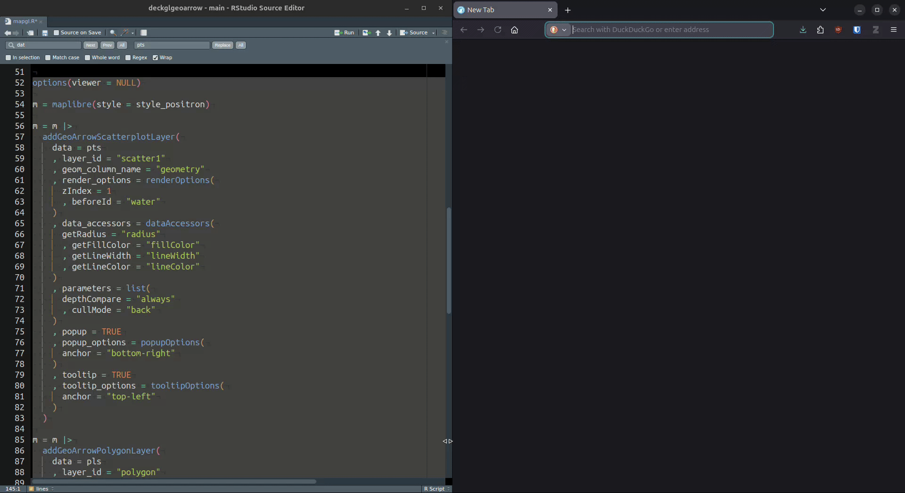

About
Easy and efficient rendering of very large geospatial data in the browser.
deckglgeoarrow provides functionality to efficiently visualise potentially very large geospatial data as Deck.gl layers on top of a maplibre/mapbox map created with package mapgl.
For very quick and efficient data transfer from R memory to the browser, geoarrowWidget is used. Layer creation is done in ‘JavaScript’ using geoarrow/deck.gl-geoarrow (see Features section for details on how and why layer creation is efficient).
Features
Currently, (MULTI)POINT, (MULTI)LINESTRING and (MULTI)POLYGON features are supported by the following layer functions:
-
addGeoarrowScatterplotLayerfor point data -
addGeoarrowPathLayerfor linestring data -
addGeoarrowPolygonLayerfor polygon data
Support for other layers, such as discrete global grid layers (S2, A5, H3), origin-destination layers (Arc, trips) and point-cloud layers, among others, will follow.
Supported data sources
Others
The following local or remotely hosted files types are supported (via file/url argument):
Note, that due to a restriction in the upstream JavaScript dependency, only files with native GeoArrow geometry encoding are supported. WKB encoded geometries will not render!
In addition, nanoarrow array_streams (as files) are supported.
Installation
The development version of deckglgeoarrow can be installed from GitHub with:
# install.packages("pak")
pak::pak("r-spatial/deckglgeoarrow")Example
To showcase what the package can do, consider this example.
Here, we visualise
- 1M random points with random sizes and colors +
- ~11k polygons colored by river basin +
- ~155k lines colored and sized according to their Strahler number
in one map.
Here’s how quickly this renders:

More examples can be found here